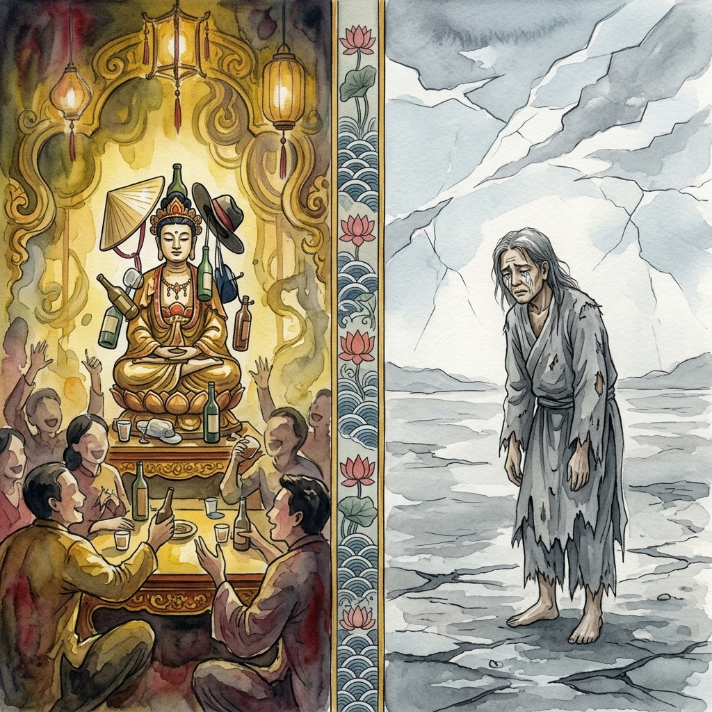
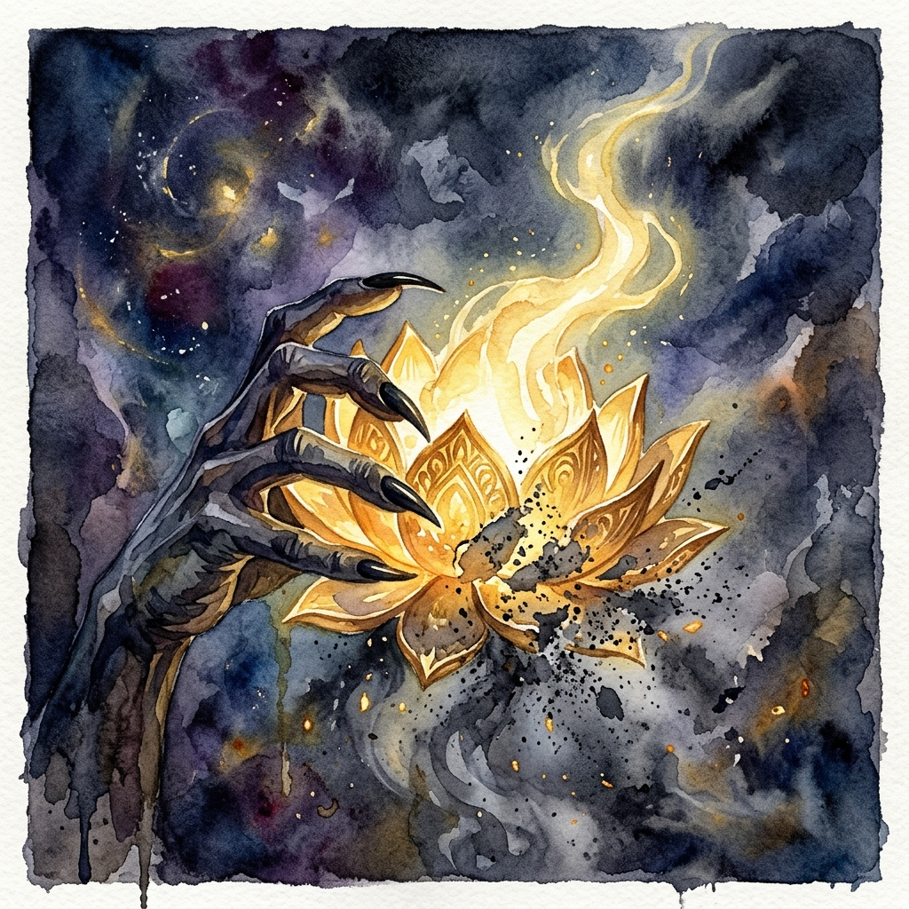
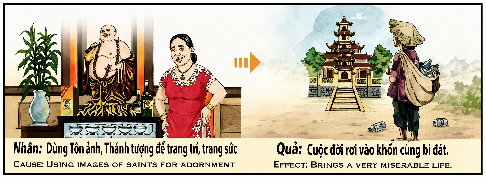

La Profanación de lo Invisible The Profanation of the Invisible
"No es la piedra lo que sangra cuando la tratas con desdén, sino el hilo de oro que unía tu espíritu al cielo." "It is not the stone that bleeds when you treat it with disdain, but the golden thread that united your spirit to heaven."
Lo sagrado no es una cuestión de religión, sino de reverencia ante el misterio de la vida. Cuando un ser humano toma un símbolo de la divinidad —una imagen que representa la aspiración más alta de paz y sabiduría— y la rebaja al nivel de un adorno banal o, peor aún, la utiliza con falta de respeto en ambientes de vicio o frivolidad, está cometiendo un acto de suicidio espiritual. No se puede habitar en la luz mientras se oscurece la lámpara que la proyecta. El karma de la profanación no es un castigo externo, sino el vaciamiento interno de la propia gracia.
La ley de causa y efecto nos dice que al tratar lo sagrado con desdén, estamos declarando que no hay nada más allá de nuestra comodidad inmediata. Esa declaración se convierte en nuestra realidad: la vida pierde su "aura" de protección y significado. Quien usa la imagen de un santo para decorar su desidia, pronto descubrirá que en sus momentos de verdadera necesidad, no encuentra consuelo en ninguna parte. La belleza y la paz huyen de aquel que no sabe honrar su fuente. La miseria que sigue a este acto es la soledad de un alma que ha cortado sus propias raíces celestiales.
El "antes" de este karma es una vida llena de objetos lujosos pero vacíos de espíritu, donde lo sagrado se exhibe pero no se vive. El "después" es el desierto: una existencia donde la tragedia parece no tener fin porque hemos perdido la brújula de la reverencia. Para sanar este karma, debemos aprender a mirar con los ojos del corazón, reconociendo que cada símbolo es una puerta que solo se abre ante la humildad. Solo aquel que sabe postrarse ante lo que es más grande que él mismo, recupera la dignidad de estar de pie ante el mundo.
The sacred is not a matter of religion, but of reverence before the mystery of life. When a human being takes a symbol of divinity—an image representing the highest aspiration of peace and wisdom—and lowers it to the level of a banal ornament or, worse yet, uses it disrespectfully in environments of vice or frivolity, they are committing an act of spiritual suicide. One cannot dwell in the light while darkening the lamp that projects it. The karma of profanation is not an external punishment, but the internal emptying of one's own grace.
The law of cause and effect tells us that by treating the sacred with disdain, we are declaring that there is nothing beyond our immediate comfort. That declaration becomes our reality: life loses its "aura" of protection and meaning. He who uses the image of a saint to decorate his negligence will soon discover that in his moments of true need, he finds comfort nowhere. Beauty and peace flee from those who do not know how to honor their source. The misery that follows this act is the loneliness of a soul that has cut its own celestial roots.
The "before" of this karma is a life full of luxurious objects but empty of spirit, where the sacred is displayed but not lived. The "after" is the desert: an existence where tragedy seems endless because we have lost the compass of reverence. To heal this karma, we must learn to look with the eyes of the heart, recognizing that every symbol is a door that only opens before humility. Only he who knows how to bow before what is greater than himself regains the dignity of standing upright before the world.
TODO: Traduzione in italiano...
TODO: 中文翻译...
TODO: الترجمة العربية...
TODO: Русская трансляция...
TODO: Deutsche Übersetzung...
TODO: Traduction française...
TODO: 日本語翻訳...
TODO: Tradução em português...
TODO: Bản dịch tiếng Việt...
El Mercader y la Lámpara Eterna
The Merchant and the Eternal Lamp
Había una vez un mercader llamado Silas que poseía una colección de estatuas sagradas de incalculable valor. Silas no era un hombre de fe; para él, los Budas de jade y los Cristos de oro eran solo trofeos que demostraban su éxito. En sus banquetes, Silas solía colocar sombreros ridículos sobre las cabezas de las estatuas o usarlas para sostener las copas de sus invitados, riendo mientras profanaba aquello que miles de personas veneraban con lágrimas en los ojos.
Un día, Silas adquirió una pequeña lámpara de aceite que, según se decía, procedía del altar de un santo olvidado. La lámpara emitía una luz dorada y suave que nunca se apagaba. Sin embargo, Silas, queriendo impresionar a una cortesana, decidió usar el aceite sagrado de la lámpara para perfumar su vino. En el instante en que el aceite tocó el cristal, la lámpara se rompió en mil pedazos y la luz se desvaneció, dejando la sala en una oscuridad absoluta y gélida.
A partir de esa noche, la fortuna de Silas se desmoronó. Sus barcos se hundieron en mares tranquilos y sus amigos desaparecieron como el humo. Lo más trágico fue que Silas empezó a sentir un frío interno que nada podía calmar. Vagó por el mundo como un mendigo, con los pies sangrantes, buscando un templo donde refugiarse, pero cada vez que se acercaba a un altar, sentía que las imágenes le daban la espalda. No era odio divino; era que Silas había perdido la facultad de reconocer lo sagrado, y por lo tanto, el universo ya no podía ofrecerle su protección.
Silas murió en la soledad de un desierto, comprendiendo demasiado tarde que cuando se juega con lo eterno, es el propio tiempo lo que se nos escapa. Había tenido el cielo en sus manos y lo había usado para adornar su soberbia. Su Ikigai, su propósito olvidado, le susurró en el último aliento: "No se puede pedir luz cuando se ha disfrutado apagando el sol". Su historia quedó grabada en las arenas como un aviso de que el respeto no es una norma, sino la piel con la que el alma siente el amor de Dios.
Once there was a merchant named Silas who possessed a collection of sacred statues of incalculable value. Silas was not a man of faith; for him, the jade Buddhas and golden Christs were only trophies that proved his success. At his banquets, Silas used to place ridiculous hats on the heads of the statues or use them to hold his guests' glasses, laughing while desecrating that which thousands of people venerated with tears in their eyes.
One day, Silas acquired a small oil lamp that was said to have come from the altar of a forgotten saint. The lamp emitted a soft, golden light that never went out. However, Silas, wanting to impress a courtesan, decided to use the sacred oil from the lamp to scent his wine. The moment the oil touched the glass, the lamp broke into a thousand pieces and the light faded, leaving the room in absolute and freezing darkness.
From that night on, Silas's fortune crumbled. His ships sank in calm seas and his friends vanished like smoke. Most tragically, Silas began to feel an internal cold that nothing could soothe. He wandered the world as a beggar, with bleeding feet, seeking a temple where he could take refuge, but every time he approached an altar, he felt the images turned their backs on him. It was not divine hatred; it was that Silas had lost the faculty to recognize the sacred, and therefore, the universe could no longer offer him its protection.
Silas died in the loneliness of a desert, understanding too late that when one plays with the eternal, it is time itself that escapes us. He had held heaven in his hands and used it to adorn his pride. His Ikigai, his forgotten purpose, whispered to him in his last breath: "One cannot ask for light when one has enjoyed extinguishing the sun." His story remained engraved in the sands as a warning that respect is not a rule, but the skin with which the soul feels God's love.

La Inspiración Original
The Original Inspiration

🇻🇳 Tiếng Việt:
Nhân: Dùng Tôn ảnh, Thánh tượng để trang trí, trang sức.
Quả: Cuộc đời rơi vào khốn cùng bi đát.
🇬🇧 English:
Cause: Using images of saints for adornment.
Effect: Brings a very miserable life.
Traducción Recreada:
Causa: Utilizar imágenes o estatuas sagradas con fines puramente decorativos, frívolos o como adornos personales sin el debido respeto.
Efecto: La vida se sumerge progresivamente en una miseria trágica y una profunda infelicidad espiritual.
Si quieres conocer más sobre el proyecto o colaborar, accede a nuestro Linktree.